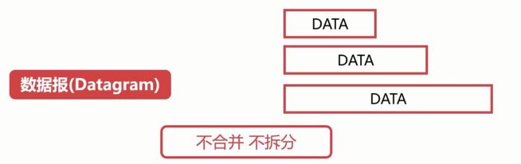

<h1 id="UDP协议"><a href="#UDP协议" class="headerlink" title="UDP协议"></a>UDP协议</h1><h1 id="概念"><a href="#概念" class="headerlink" title="概念"></a>概念</h1><ul>
<li>User Datagram Protocal</li>
<li>UDP是个非常简单的协议</li>
<li>长度主要由应用层给的数据报文的长度决定</li>
</ul>
<p></p>
<h1 id="位置、组成"><a href="#位置、组成" class="headerlink" title="位置、组成"></a>位置、组成</h1><p></p>
<h2 id="UDP首部"><a href="#UDP首部" class="headerlink" title="UDP首部"></a>UDP首部</h2><p></p>
<h1 id="特点"><a href="#特点" class="headerlink" title="特点"></a>特点</h1><h3 id="1-UDP是-无连接-协议"><a href="#1-UDP是-无连接-协议" class="headerlink" title="1. UDP是**无连接**协议"></a>1. UDP是<code>**无连接**</code>协议</h3><p>不需要建立连接就可以发送</p>
<p></p>
<h3 id="2-UDP不能保证可靠的交付数据"><a href="#2-UDP不能保证可靠的交付数据" class="headerlink" title="2. UDP不能保证可靠的交付数据"></a>2. UDP不能保证可靠的交付数据</h3><p></p>
<h3 id="3-UDP是面向报文传输的"><a href="#3-UDP是面向报文传输的" class="headerlink" title="3. UDP是面向报文传输的"></a>3. UDP是面向报文传输的</h3><p></p>
<h3 id="4-UDP没有拥塞控制"><a href="#4-UDP没有拥塞控制" class="headerlink" title="4. UDP没有拥塞控制"></a>4. UDP没有拥塞控制</h3><p>不会感知网络是否拥塞，都会尽量将数据交付</p>
<h3 id="5-UDP的首部开销很小"><a href="#5-UDP的首部开销很小" class="headerlink" title="5. UDP的首部开销很小"></a>5. UDP的首部开销很小</h3>